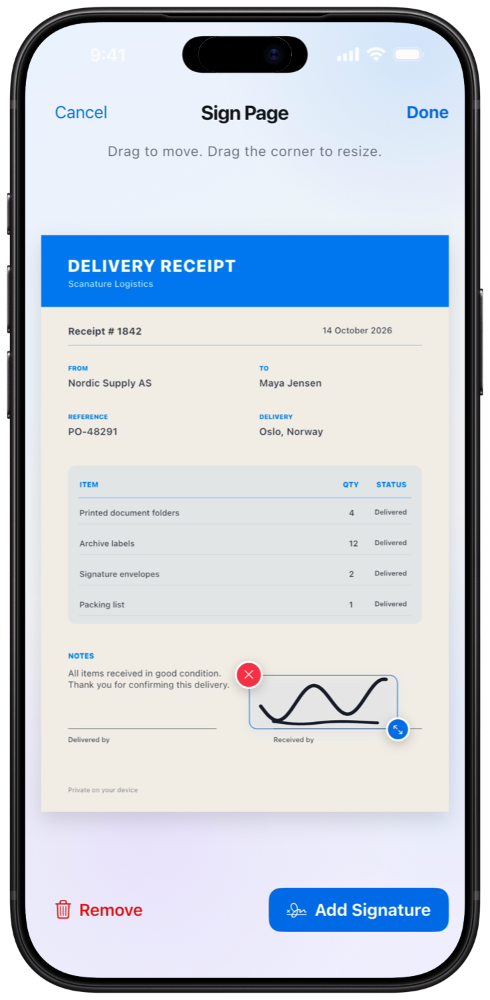
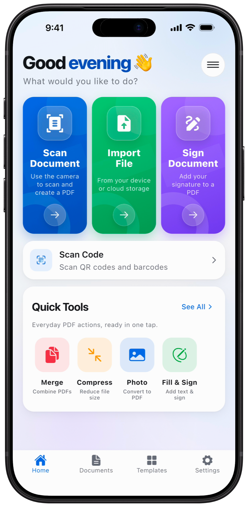
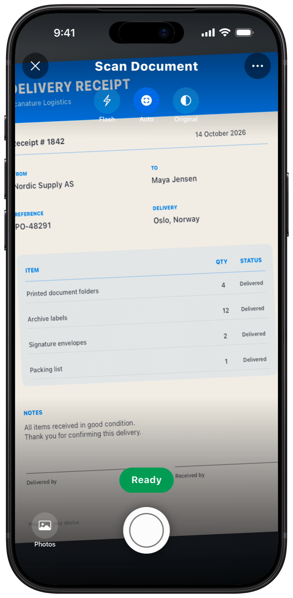
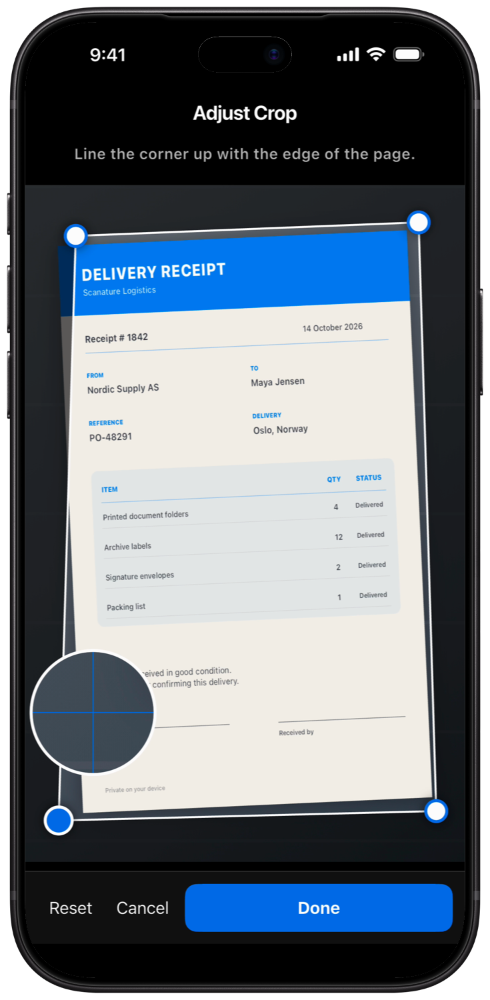
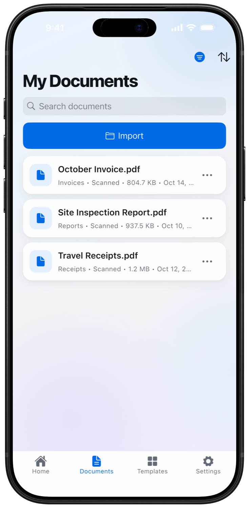

Scan and review
Follow the live guidance, capture the page, check the result.
15 seconds · Transcript
On an iPhone or iPad, in the cab or on the doorstep. Nothing is uploaded and nothing needs a signal.
Free to download, with an optional Scanature Pro subscription.


Five screens from the real app.



No round trip to a computer.
Narrated, nothing re-created.
Follow the live guidance, capture the page, check the result.
15 seconds · Transcript
Line up the four corners, then choose a clean document finish.
14 seconds · Transcript
Use a saved signature, place it, and make it fit the document.
12 seconds · Transcript
Send the completed PDF, or keep it in My Documents for later.
13 seconds · Transcript
Browse clean, fillable forms for everyday and business paperwork.
14 seconds · Transcript
Filter and sort finished documents in a private on-device library.
14 seconds · Transcript
Tap the badge on an iPhone or iPad and the App Store opens on Scanature. The first three documents are free — no account, and nothing to set up.
No account, no sign-in, nothing uploaded. Scanning, signing and text recognition all run on the device, which is why none of it needs a connection — and why the App Store privacy label for Scanature reads Data Not Collected.
Arabic and Persian laid out right to left.
The support page has the common answers and a box to describe a problem in. Privacy enquiries go to privacy@scanature.com.